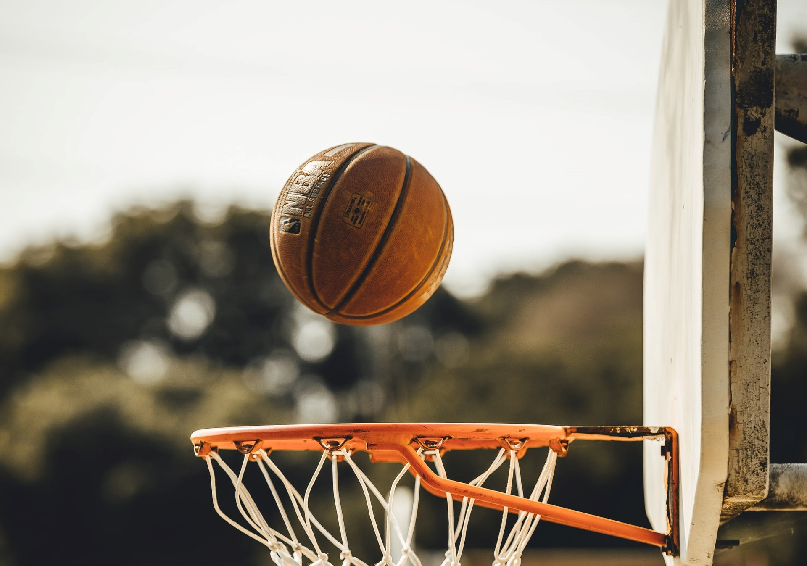

Sports
I'm not a sporty person, but I do love watching
sports! I enjoy sports of any form, be it anime
or real life. I like playing some of it, too! I can
play volleyball and badminton. I love watching
volleyball and basketball.
Coding
Coding has been one of my hobbies since last year.
I enjoy coding because I love problem
solving. It's also one of the
reasons why I love computer science.
When I was in 9th grade
I suddenly had this realization that I wanted
to build apps for a living. I love coding!
YouTube
I'm not a Youtuber but I do love watching
YouTubers make the most out of their lives.
They're a big inspiration of mine. They make
me want to work hard to reach my dreams
and make memories along the way.